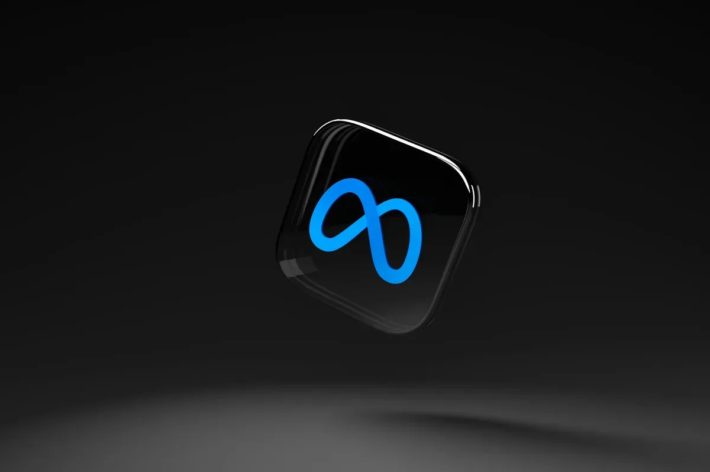
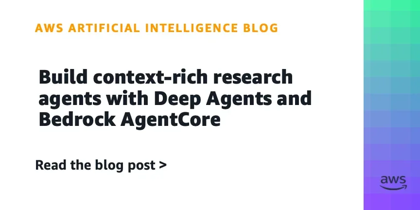
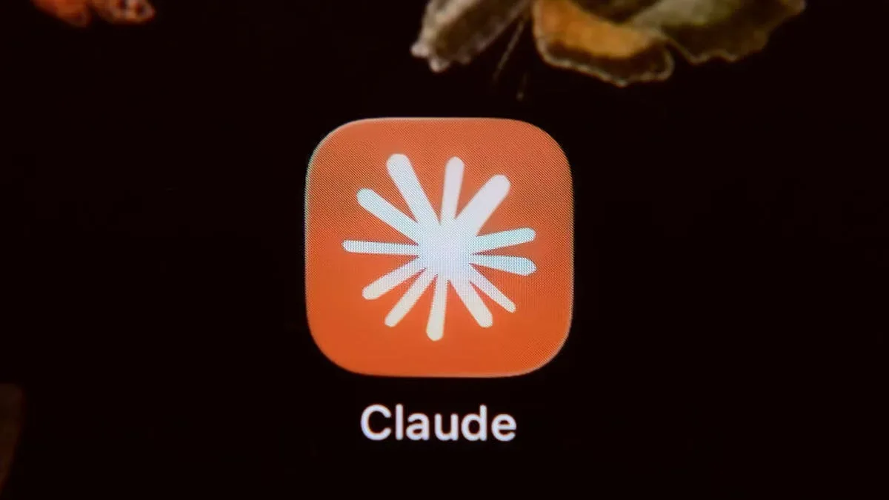
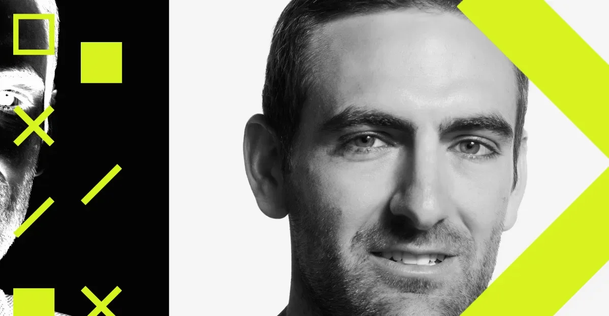
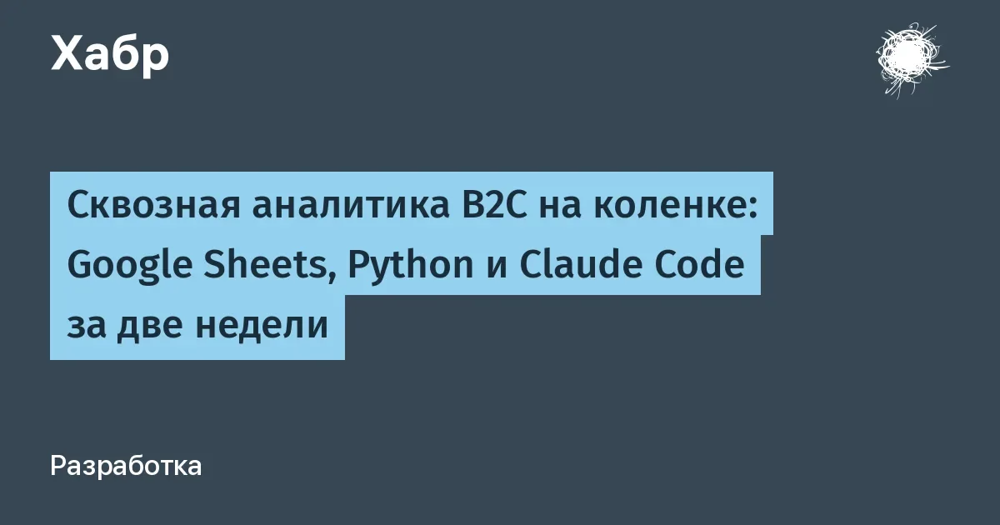
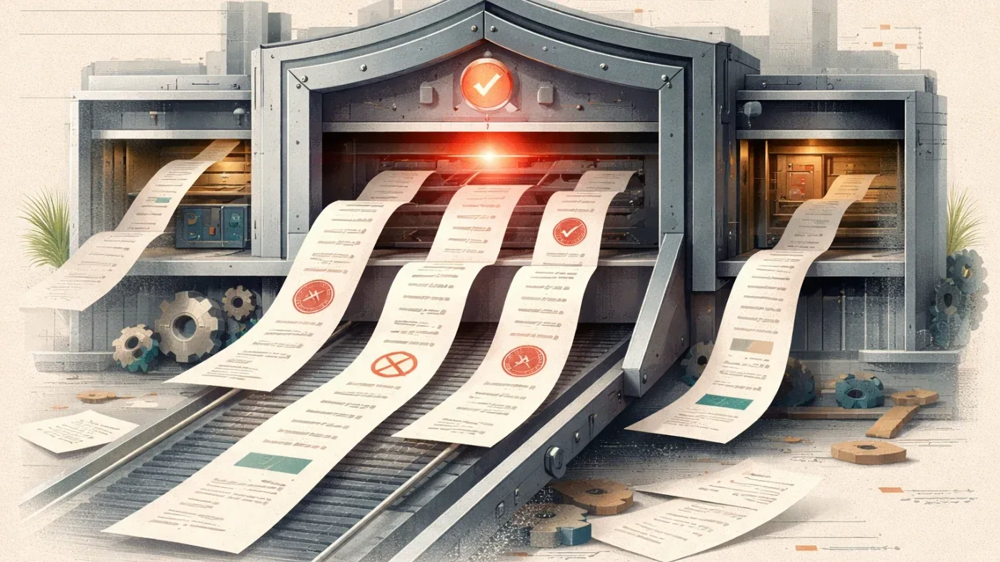
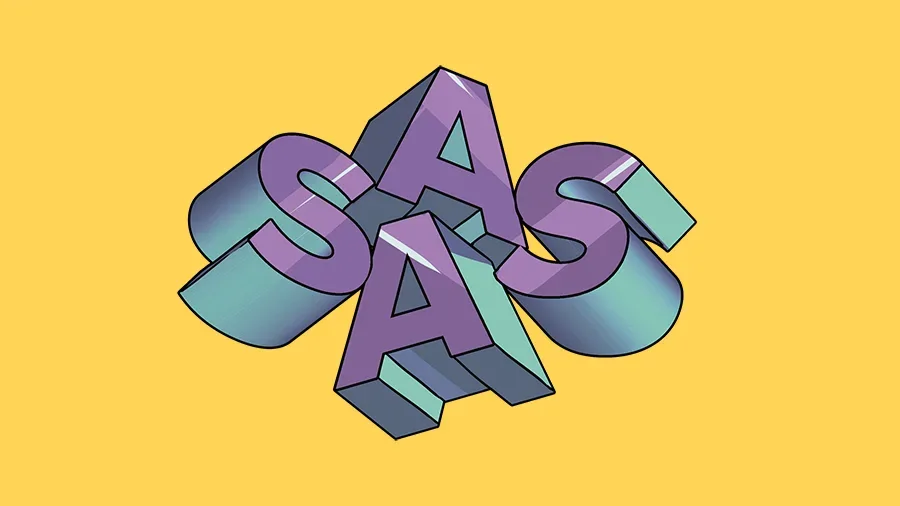

РоссияКод
GPU-облака в России 2026: сравнение цен и возможностей для ML-задач
Сколько стоит GPU в российском облаке в 2026 — сравнение шести провайдеров с реальными ценами
Habr AI
15 июн.Релизы, исследования, продукты, инвестиции и AI-рынок.
Архив · 741 новостных материалов · Автоматическое пополнение приостановлено
Сколько стоит GPU в российском облаке в 2026 — сравнение шести провайдеров с реальными ценами
PR на 30 файлов ради одной кнопки — работодатель из Астаны о найме вайб-кодеров
Как вечеринки с самодоксом и дегуглингом превращают защиту приватности в тусовку.
Короткие комментарии на Reddit могут переопределять вывод ИИ-поиска, показало исследование Cornell.

Судья отклонила аргументы Meta о том, что скрейпинг порно был делом рук отдельных сотрудников.

Параллельные браузерные подагенты в MicroVM: архитектура без перегрузки контекстного окна LLM

Anthropic отключила Fable 5 и Mythos 5 по всему миру: правительство США сослалось на нацбезопасность.

Спутник YAM-9 впервые использовал ИИ-модель для самостоятельного поиска объектов на орбите — как это изменит работу космических сенсоров?

Стартап NewCore вышел из стелс-режима с $66 млн для управления ИИ-агентами как сотрудниками.

Индийский стартап Sarvam привлек $234 млн, став новым единорогом. Средства пойдут на разработку моделей для индийских языков и масштабирование.

Salesforce платит $3,6 млрд за Fin — бывший Intercom, который научил ИИ отвечать клиентам

76 экспертов требуют снять запрет на модели ИИ Anthropic: это ослабляет кибербезопасность
Как сканирование покестопов превратилось в технологию навигации военных беспилотников

Глава Skydio о запрете китайских дронов, роли ИИ в обороне и отсутствии «красных линий» для использования БПЛА.

Как собрать сквозную аналитику B2C за две недели — и почему потом ещё месяцы на атрибуцию

Как машиночитаемые контракты между микросервисами помогают LLM не терять контекст при планировании фич
Юрист без опыта в коде написала ИИ-комплаенс для геймдев-студий — и он работает за 14 секунд

Разработчик БПЛА выяснил: Claude не ошибается — он честно продолжает вашу недосказанную мысль
60 бесплатных уроков по IT с 15 июня: ИИ-агенты, Kafka, Kubernetes, QA и управление командами
Как Битрикс24 измерял качество RAG: экспертный датасет против синтетики и проблема leakage.
ИИ-модели в военных играх сами выбирали ядерный удар — и никто их к этому не подталкивал
Как обучение на синтетических данных приводит к «коллапсу модели» — и почему Google всё ещё предпочитает человеческий контент.
С 8 июля Claude может попросить паспорт: что изменилось в политике Anthropic и кого это коснётся
Школьник из СССР собрал андроида за два года без бюджета — в отличие от США, потративших $2,4 млн
SimpleOne встраивает MCP-агентов: как ИИ получает доступ к корпоративным процессам
Как 9 ИИ-агентов сожгли API-квоту GitHub за 90 секунд и почему обычные ретраи не спасают.
Alibaba выпустила Qwen 3.7: open-source модели с рекордным контекстом и агентом для браузера
ИИ-бум оказался американским: 88% инвестиций ушло в США

SaaS не умер, но метрики, важные для инвесторов, изменились. Что нужно знать фаундерам.

Рекордные прибыли и массовые увольнения: ИИ как оправдание и реальность расслоения